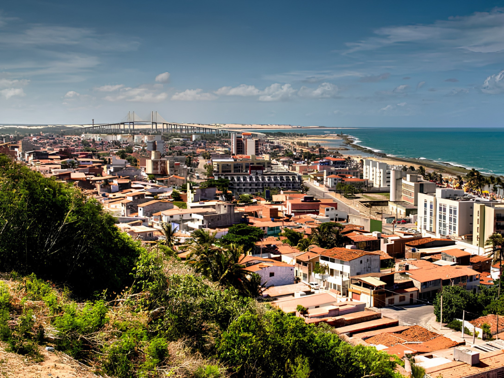

Rio Grande do Norte é um estado da região Nordeste do Brasil conhecido por suas belas praias, dunas e clima ensolarado durante grande parte do ano. Sua capital é Natal, famosa pelas paisagens litorâneas, pelo turismo e pelo histórico Forte dos Reis Magos. A economia do estado é baseada principalmente no turismo, na produção de sal marinho, petróleo, energia eólica e agricultura. O Rio Grande do Norte também se destaca pelas atrações naturais, como praias, falésias e passeios de buggy nas dunas. Culturalmente, o estado preserva tradições nordestinas presentes no forró, no artesanato e nas festas populares. Sua culinária típica inclui pratos à base de frutos do mar, carne de sol, tapioca e ginga com tapioca, muito apreciados pelos moradores e visitantes.
